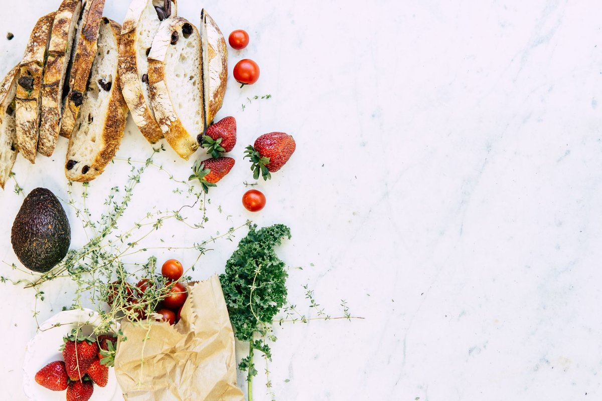

Could Quitting Ultra-Processed Food Boost Your Mental Health?

Key takeaways
- Two years ago, I sat on my kitchen floor at 3 p.m., weeping over a dropped bag of store-bought cheese puffs.
- I wasn't just tired; my brain felt constantly foggy, anxious, and unpredictable.
- Track what feels sustainable and adjust gradually.
Two years ago, I sat on my kitchen floor at 3 p.m., weeping over a dropped bag of store-bought cheese puffs. I wasn't just tired; my brain felt constantly foggy, anxious, and unpredictable. Could Quitting Ultra-Processed Food Boost Your Mental Health? It was a question I asked myself in desperation after realizing my diet had become 80% boxed snacks and fast food drive-thrus.
When you live on frozen meals, energy drinks, and packaged chips, your nervous system takes a silent beating. **Your gut and brain are in constant communication**, and flood gates of refined sugars and artificial emulsifiers constantly disrupt that neural pathway.
I always assumed my creeping anxiety was purely psychological. But when I began swapping hyper-palatable snacks for real ingredients, my mood stabilized in ways therapy alone hadn't managed.
Ultra-processed foods (UPFs) make up over 50% of the average American diet today. These aren't just cooked foods; they are industrial formulations loaded with hydrogenated oils, isolated proteins, and artificial flavor enhancers.
Research now strongly connects high UPF consumption to increased risks of depression and brain fog. **Your gut microbes produce over 90% of your body's serotonin**, and synthetic ingredients effectively starve those beneficial bacteria.
When I started cutting back, I didn't flip my life upside down overnight. I focused on small swaps, like choosing roasted almonds instead of flavored corn chips, which offered a related healthy tip for maintaining steady blood sugar throughout the morning.
The immediate result wasn't dramatic weight loss; it was emotional evenness. I stopped experiencing those terrifying 2 p.m. mental crashes that made every work email feel like a crisis.
If you're wondering how to begin without going crazy, start with breakfast. If you want to dive deeper into practical dietary shifts, check out this another practical guide on simple kitchen swaps.
The 2-Minute Win
Read the ingredient list on your favorite snack right now. If it contains more than five ingredients or items you wouldn't find in a home kitchen (like carboxymethylcellulose or soybean oil), commit to swapping just that ONE item for a whole food alternative today.
To keep things realistic, don't aim for 100% purity. I follow an 80/20 approach so I don't feel socially isolated or deprived.
When shopping at typical US grocery stores, stick primarily to the perimeter—the produce, meat, and dairy sections. Read this similar wellness insight on navigating supermarket aisles without getting overwhelmed by marketing claims.
Real food isn't about rigid perfectionism; it's about giving your central nervous system the basic raw materials it needs to build neurochemicals.
Within three weeks of lowering my UPF intake, the chronic background hum of dread began to quiet down. **Your brain thrives on micronutrients**, like magnesium and omega-3 fatty acids, which are almost entirely stripped from processed foods.
If you feel stuck, remember that small habit changes compound over time. Try to stay consistent with this micro-step approach rather than starting an aggressive diet on Monday.
Asking yourself, Could Quitting Ultra-Processed Food Boost Your Mental Health? might be the most powerful starting point for your personal wellness journey. Feel free to explore more mental-wellness guides to support your mind and body naturally.
Please note: This content is educational only — not medical advice. Always consult a healthcare provider for personalized medical concerns.
Recommended Reading
- Is Your Toddler Eating Ultra-Processed Foods? The Shocking Truth About Toddler Meals
- Realistic Blood Sugar Tips for More Energy
- How to Stabilize Blood Sugar for Energy: My Journey to Feeling Better
More in mental-wellness
Quitting Alcohol? Your Brain Might Be Set Up for Relapse
Thinking about quitting alcohol? Understand why your brain might fight back and set you up for relapse. Learn strategies
Read article →Daily Mindfulness for Stress Relief: Simple Techniques for a Calmer You
Feeling overwhelmed? Discover easy Daily Mindfulness for Stress Relief: Simple Techniques for a Calmer You. Learn scienc
Read article →